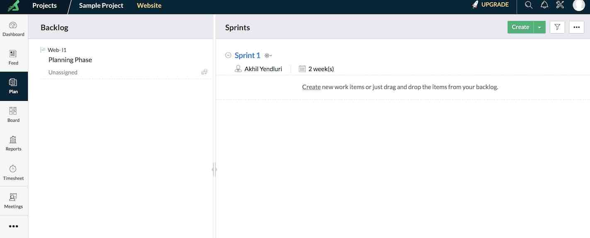
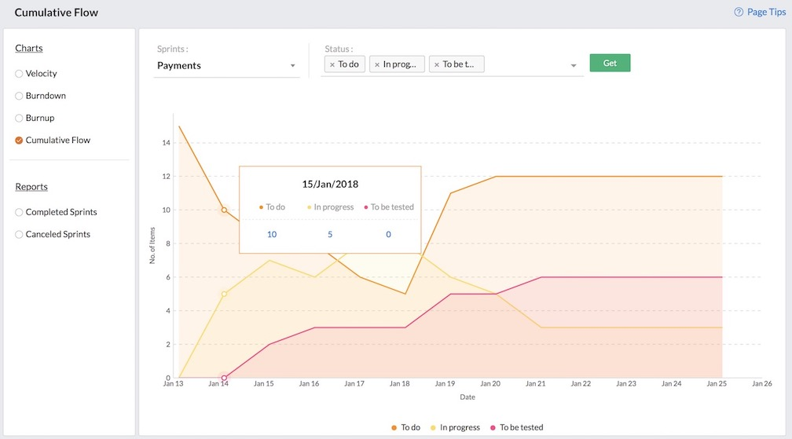

Scrum Software Process Model
Scrum Software Process Moel

Sprint
Go back
Deliverables for each Sprint
If there is backlog go to next Sprint
If no backlog go to end
Zoho Sprints Tutorial
- Go to "https://www.zoho.com/sprints/" and create account.
- Login to your account.
- Select "+project" in home page.


- In "Plan" taskbar -> select "Create WorkItems" to create modules eg. Planning, Design, Code, Testing.
- Next select "Create Sprint" and add the WorkItems into the Sprint.

- Select "Start" near the created Sprint.


- Go to "Board" -> Drag and Drop the Modules into respective status. Modules should be moved as per the current status of the software.

- In "Reports" -> Select appropritate report to see change in schedule and backlogs.
Required Reports :
- Cumulative Flow Chart

- BurnDown Chart using "Count" option under ViewBy.
Note: No need to use compare option as you will be implementing only one sprint.

- These reports must be included along with the final report to be accounted for grading.
- Reports are automatically created when you move the work items you created in the "Board" tab. So you have update the work items promptly in the Zoho Board to get accurate reports.